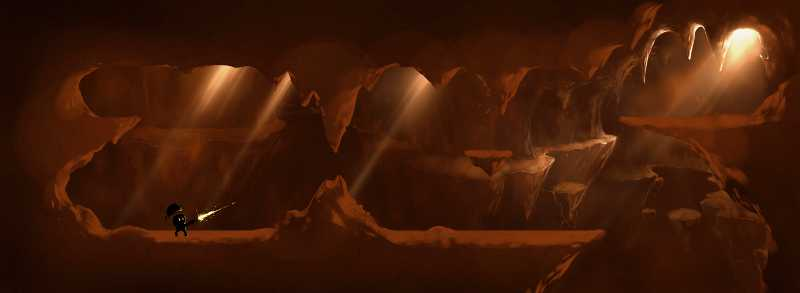
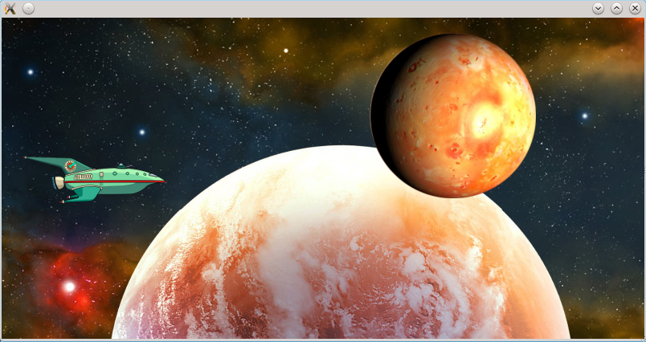
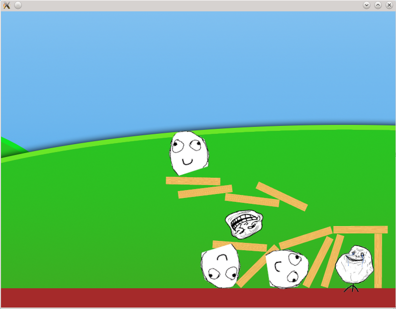

Rodrigo Goncalves de Oliveira e-mail Twitter Github
Roger Zanoni e-mail Twitter Github

Image for the demonstration app that we are planning to present on Akademy 2012. We hope...

This is a test image for the parallax scrolling feature. There are a demo video for it too, just scroll down to the video demos section.

First demo done using Quasi Engine and its physics system (through Box2D. Thank you guys!)
Quasi engine parallax demo from Roger Zanoni on Vimeo.
Quasi engine physics demo from Roger Zanoni on Vimeo.
You can download this project in either zip or tar formats.
You can also clone the project with Git by running:
$ git clone git://github.com/INdT/Quasi-Engine